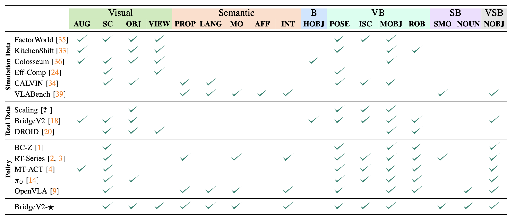
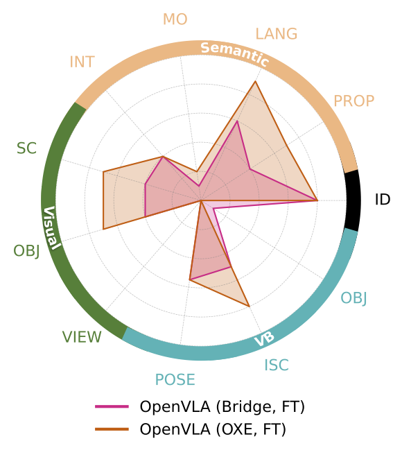
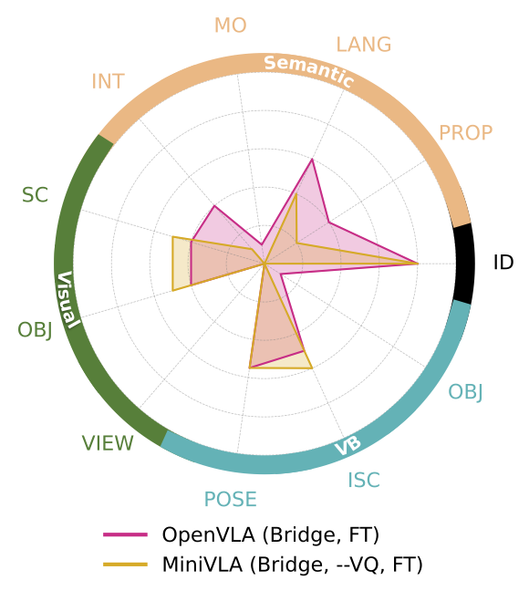
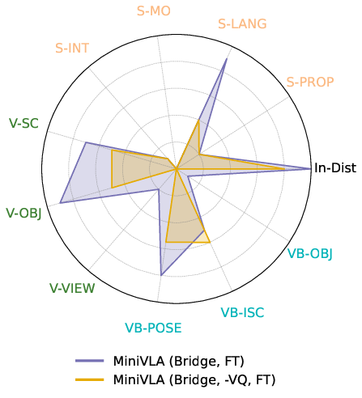

Machine learning for robotics promises to unlock generalization to novel tasks and environments.
Guided by this promise, many recent works have focused on scaling up robot data collection and developing larger, more expressive policies to achieve this.
But how do we measure progress towards this goal of policy generalization in practice?
Evaluating and quantifying generalization is the Wild West of modern robotics, with each work proposing and measuring different types of generalization in their own, often difficult to reproduce, settings.
In this work, our goal is (1) to outline the forms of generalization we believe are important in robot manipulation in a comprehensive and fine-grained manner, and (2) to provide reproducible guidelines for measuring these notions of generalization.
We first propose ★-Gen, a taxonomy of generalization for robot manipulation structured around semantic, visual, and behavioral generalization.
We discuss how our taxonomy encompasses most prior notions of generalization in robotics.
Next, we instantiate ★-Gen with a concrete real-world benchmark based on the widely-used Bridge V2 dataset.
We evaluate a variety of state-of-the-art models on this benchmark to demonstrate the utility of our taxonomy in practice.
Our taxonomy of generalization can yield many interesting insights into existing models: for example, we observe that current vision-language-action models struggle with various types of semantic generalization, despite the promise of pre-training on internet-scale language datasets.
We believe ★-Gen and our guidelines can improve the dissemination and evaluation of progress towards generalization in robotics, which we hope will guide model design and future data collection efforts.
Our Taxonomy: ★-Gen
Generalization can be a nebulous, ill-defined concept. We formalize generalization intuitively as perturbations relative to some base task.
For vision-language-action models (VLAs), these perturbations can fall under three main types:
Visual: Changes to the initial image.
Semantic: Changes to the task.
Behavioral: Changes to the expert action distribution.
A given perturbation might lie at the intersection of one or more of these types. For example, changing the location of a carrot in a "Put the carrot on the plate" task changes both the image (Visual) and the required actions (Behavioral).
Therefore we can categorize perturbations into categories of generalization depending on which combination of the above perturbation types they affect.
For example, changing the location of the carrot would fall under the Visual + Behavioral category.
We further group different perturbations in each category into human-interpretable axes of generalization. Below you can find the axes we have enumerated for each category of generalization.
These axes span a wide range of possible perturbations, and we show below that ★-Gen encompasses all notions of generalization in prior work:

Comparing ★-Gen to notions of generalization in prior work, as well as our benchmark BridgeV2-★ .
Instantiating our Taxonomy: BridgeV2-★
We walk through an example of instantiating our taxonomy ★-Gen into a real-world benchmark for generalization evaluation.
We use the popular Bridge-V2 dataset as a starting point, and we train several state of the art models on our starting data:
OpenVLA, MiniVLA, and \( \pi_0 \). We pick the following base tasks which are aligned with the Bridge-V2 dataset,
and we collect 20-50 additional demos to ensure they are in distribution for our setup.
Put carrot on plate
Put knife on plate
Put plate in sink
Flip pot upright in sink
For each of these base tasks, we chose perturbations along a subset of our axes, since some axes did not have meaningful instatiations on this dataset.
Please refer to our paper for details on the specific evaluation tasks we used.
Our main results on our BridgeV2-★ benchmark are shown on the left, which consists of in-distribution base task
performance, and 55 task variations that span 13 of our axes,
for a total of 885 real-world evaluations. We find that existing
generalist policies tend to struggle on most of our considered
axes. In particular, semantic generalization is weak across
all models, despite them leveraging large language model
backbones trained on internet-scale data. This has interesting
implications: e.g., rather than relying soley on improvements
in language modeling to improve semantic generalization,
perhaps other mechanisms are needed, such as improving
language annotations in robot datasets.
Each model tends to have similar strengths and weaknesses
across our different axes. However, there are some notable
differences between each model that the fine-grained nature
of our benchmark helps reveal. For example, OpenVLA is
noticeably worse at visual generalization than the other models,
while MiniVLA struggles more with forms of visual
+ behavioral generalization. OpenVLA performs the best
at understanding object properties which could be due to
it having the largest language model backbone, but it still
struggles with other forms of semantic generalization. \( \pi_0 \)
generally performs the best across all axes, possibly due to
a more capable VLM backbone (PaliGemma), and/or better
architecture design (flow-based action chunking). However,
like the other models, \( \pi_0 \) still generally struggles in terms
of absolute performance for most axes.

(a) Scaling robot data: it is
important to note that OXE is a significantly larger dataset that
contains Bridge V2, along with data from over 20 other robot
embodiments. Consistent with prior work, we find that
larger and more diverse robot datasets can significantly improve
overall generalization. However, we observe that while
generalization improves along several axes (especially some
semantic and visual axes), those that the Bridge-only model
struggled with the most (e.g., Viewpoint, Morphed Objects,
Multi-Object Referencing) do not improve significantly.

(b) Scaling LLM backbone: we compare VLA
policies that share the same architecture and differ only in
the large language model (LLM) backbone. Specifically, we
compare OpenVLA (Bridge, FT), using Llama 2 7B,
and MiniVLA (Bridge, –VQ, FT), using Qwen2.5 0.5B,
both using the same pre-trained vision encoder. Note that this
version of MiniVLA does not use vector quantized action
chunking (designated as –VQ), and the only major difference
between these two models is their LLM backbone. We find that
the larger LLM backbone does improve semantic generalization,
which makes intuitive sense. However, there still remain
large deficiencies in terms of absolute performance for these
axes, and there is much less effect on the others, suggesting
that scaling LLM size only has limited benefits.
(c) VQA co-training: we investigate the impact
of co-training with general visual-question answering (VQA)
data, which has been suggested in prior work to improve
VLA generalization. We find that VQA co-training does
generally improve generalization, but surprisingly has a mixed
effect for semantic axes, improving for 3 of them (Language
Rephrase, Multi-Object Referencing, Internet Knowledge), but
hurting another (Object Properties). This could indicate that
there is room for improvement when co-training VLAs, such
as by using VQA data that is targeted for inducing various
forms of policy generalization, rather than general VQA data.

(d) Vector Quantized Actions:
we investigate the effect of removing vector quantized action chunking
(–VQ) from MiniVLA, and instead using the binning-
based tokenization from OpenVLA. We find that for nearly all
axes (except Interacting Scene), this change hurts generaliza-
tion. This is perhaps because action chunking helps the policy
resolve action uncertainty and multi-modality by committing
to certain action sequences, as hypothesized in prior work
Example Generalization Axes & Evals
Below we visualize rollouts from the policy under each of our axes of generalization tested in our benchmark BridgeV2-★.
For each row, the left video shows the base task, and the right slider (and color-coded scroll buttons below the videos) shows an example generalization condition for that axis.
These videos are real rollouts from MiniVLA.
BASE TASK: Put carrot on plate
V-SC: distractors
V-OBJ: orange plate
V-VIEW: new camera view
S-PROP: Put the orange object on the plate
S-LANG: Lift carrot and place on plate
S-MO: Put the object that is on the counter on the plate
S-INT: Put the object that is the same color as a basketball on the plate
Here we provide a demo of using Gemini 2.0 Flash to automatically generate evaluation conditions for a base task according to ★-Gen.
First, provide a Gemini API key, which can be generated here (this will only be stored locally).
Then, provide a base task by uploading a scene image (under 1 MB) and providing a language instruction.
You may then choose an axis from ★-Gen from one of the options in the drop-down menu, and Gemini will suggest new perturbed tasks (as text) for evaluating the chosen axis.
Disclaimer: The generated perturbations are not guaranteed to accurately reflect the chosen axis.
Citation
Acknowledgements
The website template was borrowed from Jon Barron.